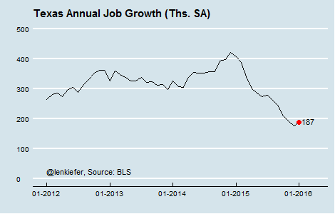
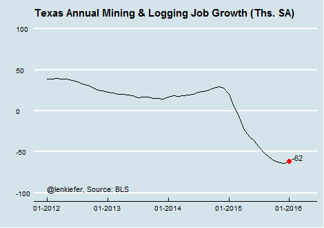
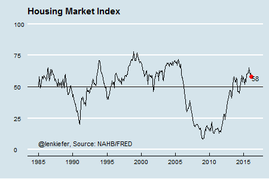
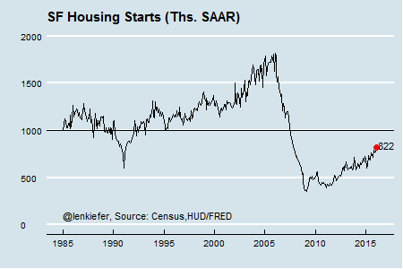
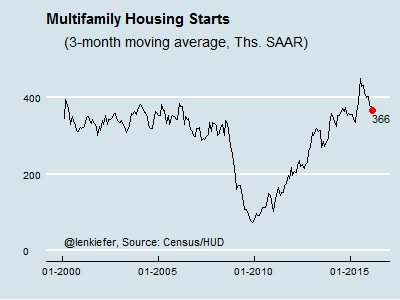
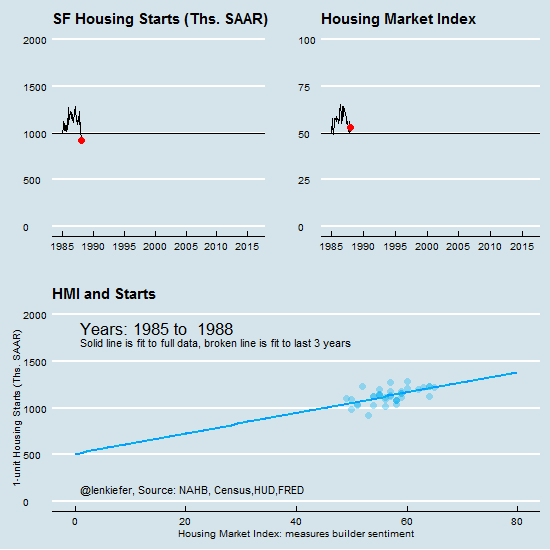
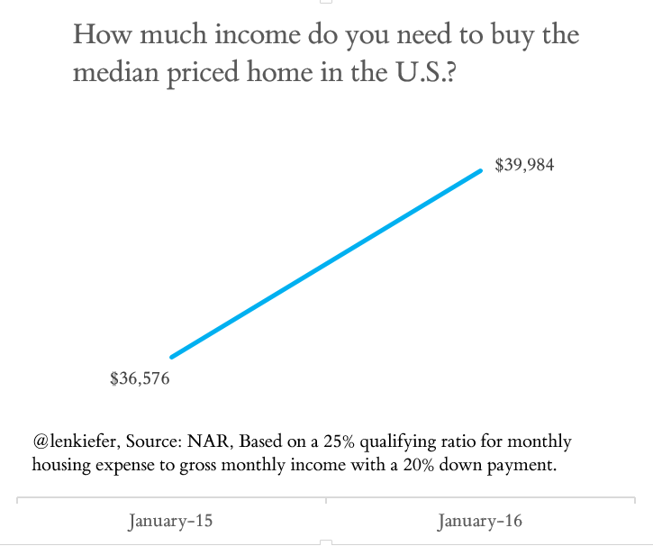
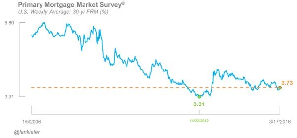
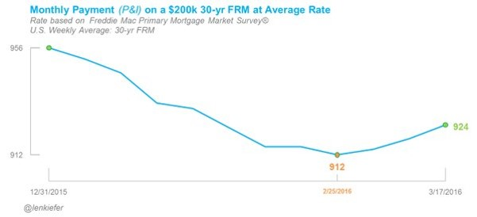
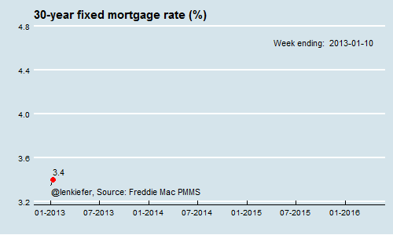

This past week I tracked several data releases that give us an idea of the health and vibrancy of the economy and housing markets.
State employment trends positive
Consistent with the national employment numbers state employment trends are positive. The BLS reported on employment trends by state for January 2016 this week. Eleven states plus DC had a statistically significant month-to-month increases in employment and five states experienced month-to-month declines.

One state I’ve been focused on is Texas due to its reliance on oil and gas drilling. A report from Brookings analyzed how the decline in oil and gas drilling could impact employment in states that rely on the energy sector. North Dakota was greatest at risk, possibly losing over 7 percent of total employment due to the decline in oil and gas drilling activity. Texas is also at risk, possibly losing 1.2 percent of total employment. The latest jobs data for Texas continue to show year-to-year growth in Texas employment, but the pace of gains has slowed.

One part of the Texas employment picture that’s not doing well is oil and gas drilling. The BLS tracks mining employment, and it’s been headed down.

Builder confidence and housing starts
This week the NAHB/Wells Fargo Housing Market Index (HMI) and housing starts data were released. The HMI is a diffusion index based on survey questions about homebuilder’s attitudes. Values of the index above 50 indicate that on balance, more respondents feel positive about the current conditions in and direction of the single-family housing market. During the crisis the index plummeted, reaching a low of 8 in 2009.

The HMI has been above 50 since the summer of 2014 and remained so in the March 2016 report. The HMI was unchanged month-to-month at 58. The HMI has declined from its post-recession highs, but remains above 50, indicating that on balance homebuilders are upbeat. The housing starts data released on Wednesday were consistent with the builders’ general confidence. The February single-family housing starts—those for one-unit properties—rose to 822,000 at a seasonally-adjusted annual pace. The data are not measured with great precision, so the month-to-month change while an impressive 7.2 percent was not outside the confidence interval. But the year-to-year increase of 37 percent was statistically significant and shows a housing market that’s getting back on track.

Multifamily—starts for buildings with 2 or more units—have been doing pretty well, but the pace has slowed recently. The data are noisy, so I look at a 3-month moving average of the starts data. Multifamily starts are slowing, but remain on a pace of over 350,00 units per year, which is a solid number.

Though the single-family housing starts number was solid, it’s still underperforming relative to confidence based on historical relationships. If historical correlations held, then given builder confidence we should be seeing housing starts at a level about one and a half times the current level (see chart below).

The animated gif below compares the evolution of the HMI and single-family housing starts since 1985.

One reason why building is not catching up to sentiment is a lack of available labor. This article from NAHB analyzes trends in construction employment and job openings and finds that the number of unfilled construction jobs in January 2016 is the highest since 2007.
Mortgage rates still pretty low
The National Association of Realtors reports on homebuyer affordability. Their report indicates that homebuyer affordability is declining with rising home prices. According to their analysis, the “qualifying income” to afford the median priced home in the U.S. has increased $3,400 from January 2015 to January 2016.

Fortunately for prospective homebuyers, mortgage interest rates remain low.

Low mortgage interest rates help support homebuyer affordability. How much does it help? I charted how much principal and interest payments on a $200,000 loan with a 30-year fixed rate term vary given the weekly changes in mortgage rates. Over the last three weeks mortgage rates have ticked up 0.11 percentage points, which would increase required P&I payments by about $12 a month. (Note that this analysis assumes a static loan amount, unlike NAR’s which accounts for rising prices).

What’s it like tracking mortgage rates every week
Finally, I’ve been working on a mortgage rate survey since January 2013. The gif below shows the weekly changes in mortgage rates since that time.

{% include JB/setup